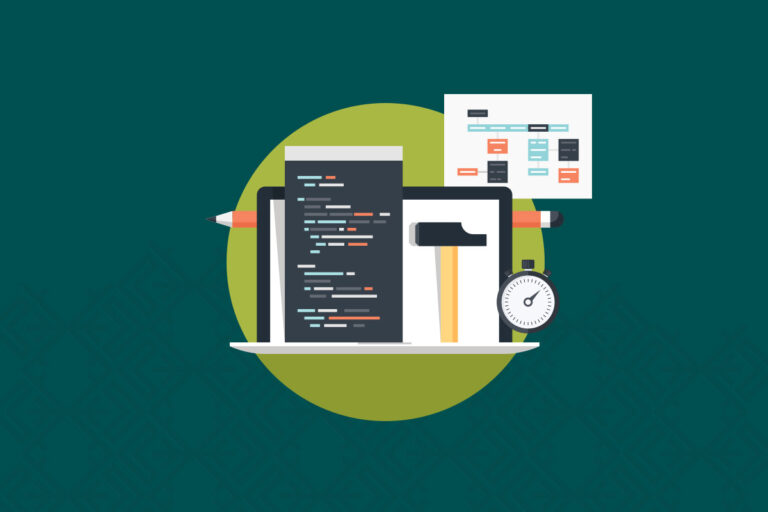

Back-End, es el lado opuesto del Front-End.
El Back-End es el área que se dedica a la parte lógica de un sitio web, es el encargado de que todo funcione como debería, el back-end es la parte de atrás de alguna manera no es visible para el usuario ya que no se trata de diseño, o elementos gráficos, se trata de programar las funciones que tendrá un sitio.
El Back-End es la programación dura y pura, desde la programación de las funciones del sitio hasta bases de datos e incluso más.
El Back-End es el área que se dedica a la parte lógica de un sitio web, es el encargado de que todo funcione como debería
El back-end es la parte de atrás de alguna manera no es visible para el usuario ya que no se trata de diseño, o elementos gráficos, se trata de programar las funciones que tendrá un sitio.
El Back-end trabaja todo el tiempo con lenguajes de programación, lenguajes que requieren de una lógica ya que esta área es también la encargada de optimizar recursos, de la seguridad de un sitio y demás.
Cosas que el usuario no ve de primeras pero que existe código detrás que está haciendo su trabajo.
Los lenguajes de programación que se utilizan en el Back-end en la actualidad son PHP, JavaScript, Python y Ruby. Además de HTML y CSS, aunque básico, también deben saber al menos un poco.
De los lenguajes mencionados son los más usados, pero no son todos los que existen y no es obligatorio utilizar todos y cada uno de ellos, hay programadores back-end que solo saben algunos
no es necesario saber todos, depende de lo que se quiera programar y de las capacidades del lenguaje. aunque el Back-End tiene que saber de HTML y CSS
no es necesario saber a un nivel alto como lo haría un Front-End, es simplemente para poder crear una estructura básica en la que trabajar.
El flujo de trabajo de un back-end consiste en darle funciones a un sitio, por lo general el front-end hace un sitio estático, y el back-end después le da funciones y adapta el sistema programado a ese sitio web.
Es por eso que las personas que se dedican al back-end también tienen que tener conocimientos al menos básicos de front-end. Para poder juntar las 2 partes en 1.
Con esto hago referencia a algo que muchos ya conocemos, los 2 hemisferios del cerebro, el izquierdo y derecho, en lo siguiente cada persona tiene más desarrollado un hemisferio de los 2 que tenemos
un hemisferio es más capaz de realizar tareas creativas, mientras que el otro es más capaz de realizar tareas lógicas.
¿Para poder ser bueno en un área primero tienes que identificar qué tipo de persona eres y que tipo de inteligencia tienes, eres una persona creativa? o eres una persona más lógica?
En el front-end se necesitan personas con esta capacidad creativa y en el back-end se necesitan personas con muy buena lógica para resolver problemas.
Si entras en un área que no te gusta vas a ser malo en esa área. En cambio, si te gusta esa área vas a ser mejor y entonces vas a poder cobrar más dinero.
Todo depende de que tanto te guste y que tan bueno seas.